Slayer
A Task Master gives you a number of one monster from their zone to slay. Every kill on task gives Slayer XP, and finishing the task pays Slayer points and bonus combat XP, then the master hands you the next one. Slayer starts with the quest 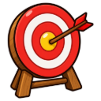
Task Masters
| Master | Zone | Needs | Kills per task | Points |
|---|---|---|---|---|
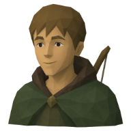 Scout Tomas | 🌾 Ashvale | 💀 Slayer 5, combat 10 | 8–15 | 4 |
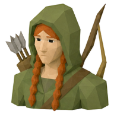 Ranger Elka | 🌲 Thornwood | 💀 Slayer 15, combat 30 | 10–20 | 6 |
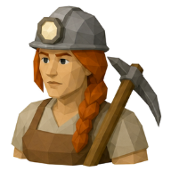 Forewoman Brack | 🕳️ Deepstone Mines | 💀 Slayer 30, combat 50 | 12–25 | 9 |
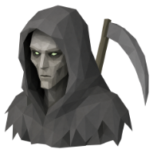 Reaper Joss | 🏚️ Bleakhaven Ruins | 💀 Slayer 45, combat 70 | 15–30 | 13 |
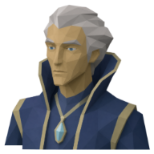 Warden Skye | 🌀 The Voidscar | 💀 Slayer 60, combat 90 | 18–35 | 18 |
Slayer points
Spent with any Task Master: 15 points swaps your task for a new one, and 60 points blocks its monster so it's never given to you again (up to 3 at once; unblocking is free). Cancelling a task for coins, its zone's travel cost, still works too.
| Item | Amount | Price |
|---|---|---|
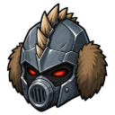 Slayer Helm | 1 | 400 points |
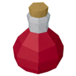 Super Attack Potion | 3 | 30 points |
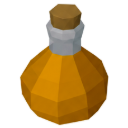 Super Strength Potion | 3 | 30 points |
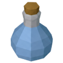 Super Defence Potion | 3 | 30 points |
| 100 | 25 points | |
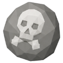 Death Rune | 50 | 40 points |
| 20 | 20 points |
Slayer Helm looks
Looks are cosmetics: worn from the Cosmetics window on the Equipment page, they show over your helm while what you really wear keeps working. Buy a look's blueprint once for 200 Slayer points, then use its monster's trophy on a Slayer Helm in your inventory. That uses up the helm and the trophy, so each look needs a helm of its own.
| Look | Trophy | Dropped by | Chance |
|---|---|---|---|
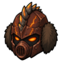 Golem Slayer Helm | 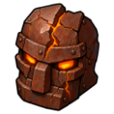 Golem Head | 1 in 1,500 | |
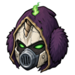 Lich Slayer Helm | 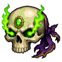 Lich Skull | 1 in 1,000 | |
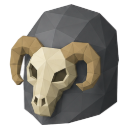 Bonecarver Slayer Helm | 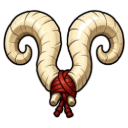 Bonecarver's Horns | 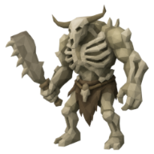 The Bonecarver | 1 in 600 |
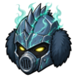 Revenant Slayer Helm | 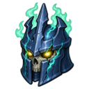 Revenant Skull | 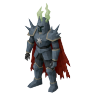 Dread Revenant | 1 in 500 |
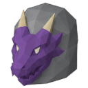 Drake Slayer Helm | 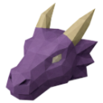 Abyssal Drake Head | 1 in 300 |